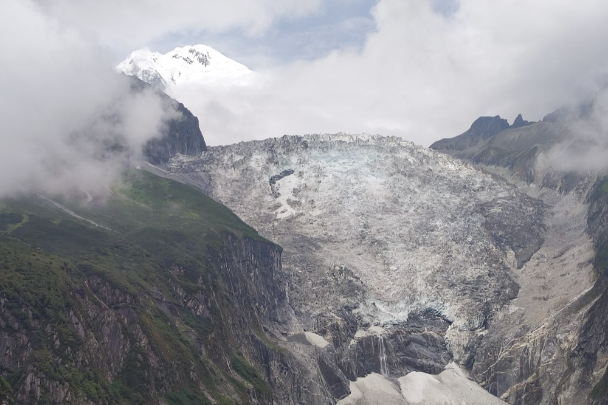
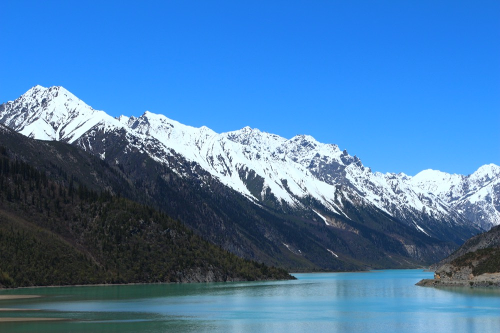
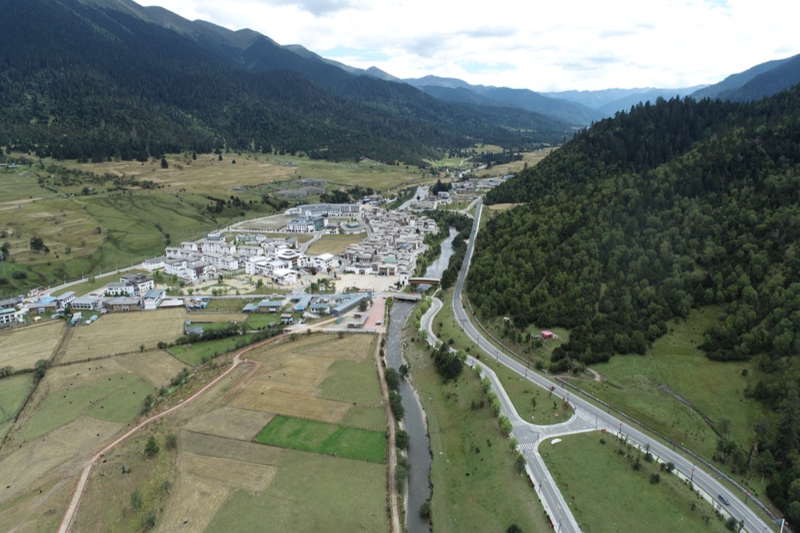

川藏南线 G318：成都到拉萨
沿川藏南线单程三周：海螺沟冰川、康区高山垭口、怒江 72 拐、然乌湖和林芝森林，最后在拉萨住四晚，再飞回。
- 天数
- 22 天
- 里程
- 约 2,200 公里
- 最佳季节
- 9 月中旬–10 月下旬
- 每人（不含机票）
- 约 CNY 21,780 起
2026 年 11 月为 2027 年 9 月中旬至 10 月下旬的行程所做的调研。证件、关闭景点、开放时间和价格都会变，出发前请与旅行社逐项确认。车程为保守估算（比导航软件慢），请以高德地图为准。
为什么选G318
中国最有名的自驾线路，按适应海拔的节奏走：冰川、峡谷、高山垭口和森林，能低就低睡，每隔几天休息一次，最后在拉萨住四晚。单程意味着不用长途开回去，也没有一晚住在 3,800 米以上。
9 月中旬至 10 月下旬： 雨季刚过的几周。降雨和塌方在 9 月逐渐减少，10 月中旬起最干燥，天空通透，森林和白杨变黄。拉萨 9 月白天约 20°C，10 月 12–17°C，夜间接近 0°C。白天约 12 小时，不走夜路。黄金周（10 月上旬）四川段严重拥堵：要么在那之前过巴塘，要么之后再出发。
最佳季节： 9 月中旬至 10 月下旬最好：雨季在 9 月逐渐结束，10 月中旬起 G318 最干燥，天空通透、森林金黄；单程在拉萨结束，没有寒冷的北线，所以 10 月下半月也很合适。5 月至 6 月上旬其次（干燥青绿，垭口较冷）。避开 6 月至 9 月上旬（雨季，通麦和波密一带塌方）、国庆期间的四川段 G318，以及 11 月至次年 4 月（垭口冰雪）。
路线： 成都 → 磨西（海螺沟）→ 康定 → 雅江 → 巴塘 → 如美 → 左贡 → 八宿 → 波密 → 林芝 → 巴松措 → 拉萨，然后飞回成都或上海。22 天，约 2,200 公里，单段车程不超过约 4 小时，在拉萨住四晚。
亮点
- 坐索道看海螺沟冰川，泸定铁索桥
- 高原之路：折多山、理塘，以及 5,130 米的东达山
- 怒江 72 拐和然乌湖
- 通麦、鲁朗林海，在色季拉山看南迦巴瓦峰
- 拉萨：布达拉宫、大昭寺和八廓街、罗布林卡、色拉寺辩经
须知
- 外国游客不能在西藏自治区自由行：必须由持牌西藏旅行社按确切路线办理入藏函及其他证件，持证导游全程陪同。至少提前一个月申请。经 G318 从芒康陆路入藏是外国游客的成熟路线。
- 车辆：做外国人自驾的旅行社用自己的西藏牌照车辆，并为驾驶员办临时驾照；从成都租的车可能不被接受。车上还有导游，六人加行李请按两台车计划。
- 海拔是最大的风险。年长者或有心肺疾病的人请在预订前看医生。睡眠海拔上升最大的一晚是左贡（3,780 米，第 11 天）；订供氧房，随身带血氧仪。左贡之后一直睡得更低，直到拉萨。
- 确认旅行保险是否承保你的年龄、自驾到约 5,100 米的海拔以及紧急转运。许多保单止于 3,000–4,000 米或 70–80 岁。
- 西藏自治区内的酒店须有接待外国人的资质；由旅行社按入藏函行程预订。3,000 米以上请要求供氧房。
- 2026 年对外国游客关闭：来古冰川和米堆冰川（对所有人关闭）、雅鲁藏布大峡谷、南伊沟、色达五明佛学院。出发前一个月再确认。
- 布达拉宫门票提前 10 天放出，周一闭馆（节假日除外）：选好出发日，让参观布达拉宫那天不是周一。由旅行社预订。
- 回程：拉萨飞成都约 2 小时，每天很多班；飞上海直飞约 4–6 小时（每周班次少），或经成都、西安转机。旅行社的车还要开回成都，报价里会体现。
两种玩法
💰 最划算
- 住： 每座城市的“划算”选择，四星或平台同等级（见住宿）。
- 吃： 在评分好的平价老店吃地方特色。
- 每人约 CNY 21,780–35,150 元 （22 天，含旅行社车辆、导游和证件，不含到成都和从拉萨回程的机票）。
✨ 最佳体验
- 住： 拉萨的瑞吉或香格里拉（客房供氧），高海拔夜晚选评分最好、有供氧的酒店，康定和巴松措选有特色的酒店（见住宿）。
- 吃： 成都正宗火锅、鲁朗石锅鸡，以及拉萨最好的藏餐和尼泊尔餐厅。
- 每人约 CNY 31,380–48,060 元。
两种玩法路线和天数相同，只是住宿和餐饮不同。
路线地图
● 带序号：按顺序的住宿城市 ● 开车日途经的景点或午餐。 点击地点可看是第几天。 路线按 OpenStreetMap 路网绘制，仅供参考。
行程：22 天 21 晚
每个开车日要么只开一段（早出发，赶到目的地吃迟午餐，下午只看景点），要么分上午、下午两段，中间停下吃午餐。去景点的短途不计。
上午
抵达入住；海拔 500 米，第一天轻松安排。
午餐
午餐：川菜经典（麻婆豆腐、回锅肉）；可要求微辣。
下午
人民公园喝茶，逛宽窄巷子。
上午
开门即去大熊猫基地，此时熊猫最活跃（路面平坦，有观光车）。
午餐
基地附近或市区午餐。
下午
四川博物院，或武侯祠和锦里。购买血氧仪和便携氧气；与旅行社碰面说明行程。
上午
🚗 成都 → 磨西 · 284 km · 4 小时
约 8:30 出发，走雅康高速。
午餐
在磨西吃迟午餐。
下午
磨西古镇和 19 世纪的天主教堂；在 1,600 米早点休息。
上午
乘景区观光车和索道上到冰川观景台（白天到约 3,600 米：“高处玩、低处睡”）。步行很少；带保暖衣物。
午餐
在景区内午餐。
下午
回到磨西；体力允许可泡温泉。
上午
🚗 磨西 → 泸定 · 49 km · 1 小时
约 9:30 出发。
午餐
在泸定铁索桥（1706 年）旁午餐（在岸边观看，路平）。
下午
🚗 泸定 → 康定 · 49 km · 1 小时
下午到康定（2,560 米）休息。
上午
休整适应。沿河慢走，看城内的安觉寺。
午餐
午餐：牦牛肉火锅。
下午
如果大家感觉良好，可坐索道上跑马山；否则休息。早睡。
上午
🚗 康定 → 新都桥 · 76 km · 2 小时
约 8:30 出发翻折多山（4,298 米）：只停下拍照。
午餐
在新都桥午餐（约 3,450 米，只在白天停留），周围是摄影人喜爱的白杨林。
下午
🚗 新都桥 → 雅江 · 63 km · 1 小时 30
下到雅砻江谷地的雅江（2,530 米）低海拔过夜。
上午
🚗 雅江 → 理塘 · 133 km · 3 小时
7:30 前出发：全程最长的一天，翻剪子弯山和卡子拉山。
午餐
在理塘午餐（4,014 米，只在白天停留）；从车上看长青春科尔寺。
下午
🚗 理塘 → 巴塘 · 170 km · 3 小时 45
翻海子山（4,685 米），经姊妹湖，下到温暖的巴塘（2,580 米）。
上午
在低海拔真正休息一天；洗衣服。
午餐
在县城午餐。
下午
沿巴曲河散步。
上午
🚗 巴塘 → 芒康 · 103 km · 2 小时 45
7:00 前出发经海通沟（落石可能堵车）。跨金沙江进入西藏自治区；导游在边界接团，并在芒康检查站办理手续。
午餐
在芒康午餐（约 3,870 米，只在白天停留）。
下午
🚗 芒康 → 如美 · 50 km · 1 小时 15
翻拉乌山，下到澜沧江边的如美（2,640 米）低海拔过夜。有停电报告：带手电。
上午
🚗 如美 → 左贡 · 92 km · 2 小时 45
7:00 前出发，经觉巴山隧道，翻东达山（5,130 米，全程最高点）：山顶最多停 10 分钟。
午餐
在左贡吃迟午餐。
下午
休息。左贡（3,780 米）是第一个 3,000 米以上的夜晚，海拔上升很大：订供氧房，早晚测每个人的血氧。
上午
🚗 左贡 → 邦达 · 104 km · 2 小时
约 8:00 出发，经玉曲河谷和邦达草原。
午餐
在邦达午餐（约 4,300 米：时间短一些，或在车上吃）。
下午
🚗 邦达 → 八宿 · 95 km · 2 小时 30
翻业拉山（4,658 米），下怒江 72 拐到怒江边，再到八宿（3,260 米）。
上午
🚗 八宿 → 然乌湖 · 89 km · 2 小时 15
约 8:30 出发翻安久拉山（4,468 米）。
午餐
在然乌湖午餐（约 3,900 米），在路边观景点看湖。
下午
🚗 然乌湖 → 波密 · 127 km · 3 小时
沿帕隆藏布河谷下到波密（2,750 米）。有区间测速：导游会按最短用时控制。
上午
在 2,750 米休息、洗衣服。
午餐
在县城午餐。
下午
体力允许可在县城附近的高大云杉林里走平路。
上午
🚗 波密 → 鲁朗 · 156 km · 3 小时 45
约 8:00 出发经通麦峡谷：曾是 G318 最险的一段，现已建桥修隧道。
午餐
在鲁朗午餐：石锅鸡。
下午
🚗 鲁朗 → 林芝 · 72 km · 1 小时 45
翻色季拉山（约 4,560 米），晴天可看到南迦巴瓦峰，再下到林芝（2,900 米）。
上午
留作应对前面路段延误的机动日。如果用不上：在尼洋河边轻松度过上午。
午餐
在八一镇午餐。
下午
巨柏林（路平）或休息。注意：南伊沟和雅鲁藏布大峡谷不对外国游客开放。
上午
🚗 林芝 → 巴松措 · 128 km · 2 小时 30
约 9:30 出发沿尼洋河谷上行，再拐进去巴松措的支路。
午餐
在湖边吃迟午餐。
下午
巴松措（约 3,480 米），上到拉萨海拔的中间一步：在湖岸看湖心岛寺庙，傍晚在湖边安静休息。
上午
🚗 巴松措 → 工布江达 · 90 km · 1 小时 45
约 8:30 出发回到尼洋河谷。
午餐
在工布江达午餐。
下午
🚗 工布江达 → 拉萨 · 266 km · 3 小时 30
走免费高速到拉萨；米拉山隧道避开了 5,013 米的垭口。在酒店休息：拉萨海拔 3,650 米，今天不要劳累。
上午
上午参观大昭寺（提前一天预约），然后跟着朝圣者顺时针慢慢转八廓街。
午餐
在八廓街附近午餐：藏面、包子和甜茶。
下午
休息。傍晚在布达拉宫广场看布达拉宫。
上午
凭提前 10 天放出的分时票参观布达拉宫（周一闭馆，节假日除外）。主线路约 1,000 级台阶：慢慢走。轻松选择：宫墙下新开的雪城线路（不进入宫殿）。
午餐
午餐后好好休息。
下午
轻松的下午；晚餐吃尼泊尔菜或藏餐。
上午
罗布林卡，达赖喇嘛的夏宫园林：路平、轻松。
午餐
在城内午餐。
下午
色拉寺僧人辩经（除周日外大多数下午），或休息；最后一晚再逛八廓街。
上午
前往拉萨贡嘎机场（约 1 小时）。飞成都（约 2 小时，每天很多班）或上海（直飞约 4–6 小时，每周班次少；或经成都、西安转机）。
午餐
在机场或飞机上用餐。
下午
自驾、证件与海拔
- 在西藏自治区内（从巴塘附近的金沙江大桥起），外国游客只能按旅行社安排的行程、在持证导游陪同下旅行。导游保管证件并办理检查站手续，每天会遇到好几次检查。
- 外国人“自驾”指驾驶旅行社自己的西藏牌照车辆，驾驶员办临时中国驾照，导游随车。请书面确认：车型、保险、是否需要保障车，以及进藏前和出藏后四川段如何安排。
- 西藏境内用区间测速限速（例如波密一带有四个区间）；按每小时约 40 公里计划，超速罚款约 1,200 元。本指南的车程已考虑这一点。
- 道路：觉巴山隧道（2024 年通车）绕开了一个高垭口，拉萨方向高速上的米拉山隧道避开了 5,013 米的垭口。白天仍要翻折多山（4,298 米）、海子山（4,685 米）、东达山（5,130 米）、业拉山（4,658 米）和色季拉山（约 4,560 米）：只停下拍照。
- 9 月下旬以前，G318 巴塘—芒康（海通沟）以及通麦、波密一带可能有落石和塌方。早出发，带足水和零食，留好林芝的机动日。
- 燃油：以汽油为主，充电只当额外补充。小城常没有 95 号汽油；在康定、巴塘、芒康、波密和林芝加满。
- 海拔：随身带血氧仪和便携氧气；出发前问医生是否用乙酰唑胺。静息血氧持续低于约 85%，或头痛不止、呕吐、静息时气促或意识模糊，应下撤：不要靠吸氧硬撑。
- 医院：最好的在拉萨（西藏自治区人民医院）、林芝和康定；其他地方是县医院。紧急情况主要靠陆路转运；按下撤来计划，不要指望直升机。紧急电话：报警 110，急救 120。
- 手机和支付：办一张中国 +86 手机卡，出发前开通支付宝和微信支付；小城信号不稳，带些现金。提前下载离线地图。
- 总里程：约 2,200 公里。
全团旅行社费用（估算，待报价） 两台旅行社车辆 22 天（一台自驾，每天约 1,000–1,800 元；一台含司机，每天约 1,500–2,500 元），另加车辆空驶回成都的 4–5 天，西藏境内约 13 天的持证导游（每天 300–900 元）、证件（每人 250–400 元）、司机和导游的食宿，以及油费和过路费。为 2026 年所见市场价，请取得三家书面报价。
| 全团 | 每人（6 人） | |
|---|---|---|
| 旅行社车辆、司机、导游、证件、油费和过路费 | CNY 81,000–145,200 | CNY 13,500–24,200 |
必去景点




.jpg){kind=link}



成都
- 成都大熊猫繁育研究基地: 海拔约 500 米的林间熊猫园；园区大且有坡，建议坐电瓶车，开园（07:30）时熊猫最活跃。 07:30–18:00 (morning entry 07:30–12:00, afternoon 12:00–17:00) · 55 元 · 官方微信/官网或携程凭护照实名分时预约；据报 60 岁以上免票（护照是否适用待核实）
- 武侯祠与锦里: 纪念诸葛亮与三国的祠庙；园林平坦、有少量门槛，步行约 1 公里；隔壁锦里免费。 09:00–19:00 (last entry 18:00) · 50 元 · 仅官网/微信购票；护照购票者入口扫码；馆方称未授权任何第三方代售
磨西/海螺沟
- 海螺沟冰川（索道）: 贡嘎山下的低海拔冰川。长者路线：观光车到三号营地（约 2,940 米），索道上四号营地（约 3,600 米）观景台；到冰川舌步行约 1.8 公里（30 分钟），有游记称部分步道关闭。需一整天。 ~08:00–17:00; ticket window stops selling same-day tickets at 15:00 · 100 + bus ~70 + cable car ~140 (combo listed at 310) 元 · 海螺沟旅游公众号、美团或携程凭护照最早提前 10 天预订，限量；按 2022 年规定 65 岁以上免门票（索道优惠未确认）
康定
折多山/新都桥
- 折多山垭口: 海拔 4,298 米的第一座高垭口：留在车边，拍照五分钟，不要用力。 open road · 免费 · 无需预约
理塘
东达山
- 东达山垭口: 海拔约 5,130 米，G318 段最高点；只在车边拍照，随车带氧气。 open road · 免费 · 无需预约
八宿
- 怒江72拐观景台（业拉山）: 从业拉山口（约 4,618–4,658 米）12 公里内落差约 1,500 米的盘山路；山顶有免费停车场和观景台，无需步行。大车每天堵，新隧道可能绕开 72 拐，请确认路线。 open road · 免费 · 无需预约
然乌湖
- 然乌湖: G318 边海拔约 3,850 米的冰川湖；路边观景点即可，不必步行。 all day · 免费 · 无需预约
鲁朗
- 鲁朗林海观景台与鲁朗小镇: 色季拉山下海拔约 3,700 米的云杉林海与草甸；观景台离停车场几步路；鲁朗小镇平坦。 ? · 35 (viewing deck, older figure; platforms list ~118 for packages) 元 · 现场购票；外籍：由西藏地接社凭护照扫描件代订，入场带同一本护照
巴松措
- 巴松措及湖心岛错宗工巴寺: 海拔约 3,480 米的圣湖；观光车环湖，湖心岛寺庙经浮桥可达；大致平坦，岛上有少量台阶。 ? · 120 (peak early May–31 Oct 2026) + bus; packages 155 元 · 携程/美团或现场；外籍：由西藏地接社凭护照扫描件代订，入场带同一本护照
拉萨
- 布达拉宫（主线） UNESCO: 历代达赖喇嘛冬宫。长者难度大：从海拔约 3,650 米爬约 1,000 级台阶（13 层），宫内木梯陡，参观约 1.5–2 小时，按时段入场。较易选择：山脚雪城线路（见下）以及广场或药王山观景。 09:00–15:40 last entry (early May–late October); 09:30–15:20 in winter · 休：Mon (周一), except public holidays · 200 (peak, route 1); route 2: 100 元 · 仅官方微信小程序实名预约，约提前 7–10 天；每证件 7 天限约一次，不可改；外籍：由西藏地接社凭护照扫描件代订，入场带同一本护照。选非周一的日子。
- 布达拉宫雪城线路 UNESCO: 2026 年 9 月中旬开通：布宫山脚雪城（珍宝馆、雪监狱、造币厂、贵族宅院），东门和南门进；地面平坦，不进宫体。适合长者。 09:00–15:40 last entry (peak) · 休：Mon (周一), except public holidays (assumed same as palace) · 25 (peak early May–late October) 元 · 同一官方小程序单独购票；外籍：由西藏地接社凭护照扫描件代订，入场带同一本护照；电话 0891-6332558
- 大昭寺 UNESCO: 藏地最神圣的寺庙；大致平坦，殿堂昏暗拥挤，上金顶有楼梯（可不上）。约 1 小时。 08:30–17:30 (timed entry 08:30–13:30, afternoon untimed) · 85 元 · 提前 1 天在大昭寺小程序预约；外籍：由西藏地接社凭护照扫描件代订，入场带同一本护照
- 罗布林卡 UNESCO: 达赖喇嘛夏宫园林；平坦但面积大（全走约 2–3 公里），有另付费观光车。 ~09:30–18:00 (winter hours; summer not found) · 60 (cart and zoo extra) 元 · 现场或地接社；外籍：由西藏地接社凭护照扫描件代订，入场带同一本护照
- 色拉寺辩经: 僧人在辩经场辩经，周一至周六 15:00–17:00（周日无）；从寺门到辩经场缓坡约 300–400 米，海拔约 3,800 米，树荫下可坐。 ~09:00–17:00 · 休：Debate not on Sun (周日无辩经) · 50 元 · 现场购票；外籍：由西藏地接社凭护照扫描件代订，入场带同一本护照
展览
- 沿线所有博物馆: 2027 年展览尚未公布 2026 年 11 月查询：四川博物院和西藏博物馆都尚未公布 2027 年 9–10 月的展览。金沙遗址博物馆改造后预计 5 月上旬重开，或有新展厅，请于 2027 年春查看其公众号。国内博物馆一般提前一到三个月公布展览。
- 博物馆一般只提前几周公布 2027 年秋季展览，届时会更新本节。
博物馆
| 博物馆 | 开放时间 | 休馆 | 门票 |
|---|---|---|---|
| 四川博物院 成都 | 09:00–17:00 (holiday hours to 18:30) | Mon (周一) | free 四川博物院微信服务号实名预约；护照入馆方式未确认 |
| 金沙遗址博物馆 成都 | ? | Closed until 30 Apr 2027; Mon (周一) previously | ? (70 before closure, unverified) 2027 年确认重开后的预约规则 |
| 成都武侯祠博物馆 成都 | 09:00–19:00 (last entry 18:00) | 50 官网/微信；护照入口扫码 | |
| 西藏博物馆 拉萨 | ~09:30–17:30 or 18:30 (sources differ) | Mon (周一), except holidays | free 据报免费预约；外籍：由西藏地接社凭护照扫描件代订，入场带同一本护照。9 月下旬周一闭馆，请 28–30 日去 |
中国大多数博物馆周一闭馆，免费参观也需用护照实名预约。
吃什么
每站都有午餐和晚餐选择。标签为对应平台的评分和评论数，多为携程（满分 5 分；4.5 以上且 150 条以上评论为我们的标准）。大众点评评分未出现在搜索结果中，且其拦截自动访问，故未采用。低于标准的店仅在沿途没有更好选择时保留，并加注明。2026 年 11 月读取；价格为人均。
成都
- 午餐: 陈麻婆豆腐（青华路店） 携程 4.6 (低于 4.5 或评论较少): 正宗麻婆豆腐、回锅肉、鱼香茄子；不吃辣可点不辣豆腐、粉蒸排骨. 60–75 元
- 午餐: 盘飧市（春熙路店） 携程 4.5 · 115 条 (低于 4.5 或评论较少): 百年老字号卤菜、凉拌菜；多数不辣. 70 元
- 午餐: 易老妈蹄花·特色川菜（人民公园总店） 携程 4.4 · 437 条 (低于 4.5 或评论较少): 雪豆蹄花汤（不辣，适合长辈）、川味家常菜. 55 元
- 午餐: 嘉州叶婆婆钵钵鸡（太古里店） 携程 4.9 · 491 条: 乐山钵钵鸡，红油或藤椒；小吃午餐. 49 元
- 晚餐: 吼堂老火锅（太古里总店） 携程 4.9 · 220 条: 牛油火锅：鲜毛肚、鸭肠、牛肉；不吃辣可点鸳鸯锅清汤. 112 元
- 晚餐: 宽巷子3号·新派川菜（宽窄巷子店） 携程 4.5 · 288 条: 宅院新派川菜，套餐辣与不辣搭配. 298 元
- 晚餐: 马旺子·川小馆 携程 4.4 · 358 条 (低于 4.5 或评论较少): 经典川菜：宫保鸡丁、回锅肉，有清淡汤菜. 117 元
- 晚餐: 成都香格里拉大酒店·香宫 携程 4.7 · 70 条 (低于 4.5 或评论较少): 粤菜和精致川菜；长辈清淡首选. 216 元
- 晚餐: 玉芝兰 (低于 4.5 或评论较少): 兰桂均主理，精致清淡川菜套餐，招牌细面.
- 甜品: 何记蛋烘糕（文庙西街店） 携程 4.9 · 45 条 (低于 4.5 或评论较少): 成都蛋烘糕，甜馅. 15–25 元
磨西
- 午餐: 海螺沟阅山居花园度假酒店（磨西镇店）·阅山居私房菜 携程 4.5 · 2 条 (低于 4.5 或评论较少): 酒店私房川菜. 30 元
- 晚餐: 甘翠酒家 携程 4.9 · 17 条 (低于 4.5 或评论较少): 野毛笋烧牦牛肉、椒麻鸡；清淡可点炖牦牛肉、清炒时蔬. 51 元
- 晚餐: 柴火饭庄·老地方饭庄 携程 4.0 · 11 条 (低于 4.5 或评论较少): 藏香猪肉、核桃花炒腊肉、辣子鸡. 61 元
康定
- 午餐: 石磨豆花家常菜 携程 4.8 · 7 条 (低于 4.5 或评论较少): 石磨豆花、红烧肉、干煸四季豆；豆花不辣. 44 元
- 晚餐: 藏佳宴 携程 5.0 · 14 条 (低于 4.5 或评论较少): 藏餐：牛肉盖被、牛肉包子、酥油茶；多数不辣. 81 元
- 晚餐: 蜀九记·鲜切牦牛肉菌汤锅（溜溜城总店） 携程 4.7 · 12 条 (低于 4.5 或评论较少): 鲜切牦牛肉菌汤锅，清汤不辣. 70 元
- 晚餐: Pine Green 青棵康定菜（康定店） 携程 4.5 · 8 条 (低于 4.5 或评论较少): 新式康巴菜：牛肉盖被、黑胡椒牛肉炒饭、藏式土豆泥. 108 元
雅江
- 午餐: 雅江松茸面 携程 4.8 · 4 条 (低于 4.5 或评论较少): 松茸面、酥油茶；不辣. 26 元
- 晚餐: 雅江瑞鸿大酒店·空中餐厅 携程 5.0 · 1 条 (低于 4.5 或评论较少): 川菜；松茸炖鸡汤（不辣）. 50 元
- 晚餐: 重庆美食城川菜饭店（川藏街店） 携程 5.0 · 2 条 (低于 4.5 或评论较少): 松茸炖鸡、毛血旺（辣）. 61 元
理塘
- 午餐: 丁则川菜理塘菜牦牛汤锅店 携程 4.9 · 101 条 (低于 4.5 或评论较少): 牦牛肉汤锅（不辣）、松茸炖鸡、康巴牛肉盖被、回锅肉. 63 元
- 午餐: 味真餐馆 携程 5.0 · 95 条 (低于 4.5 或评论较少): 川味家常菜、水煮牦牛肉、青稞饼. 57 元
巴塘
- 午餐: 伙食团（巴塘店） 携程 5.0 · 9 条 (低于 4.5 或评论较少): 砂锅牛肉、松茸烧鸡、牦牛肉烧干竹笋. 54 元
- 晚餐: 巴塘假日酒店-全日餐厅 携程 4.2 · 9 条 (低于 4.5 或评论较少): 青椒炒牦牛肉、虫草花炖土鸡、松茸鸡汤锅；有清淡选择. 86 元
- 晚餐: 祥和饭庄（金弦子大道店） 携程 4.2 · 6 条 (低于 4.5 或评论较少): 川味家常：板栗红烧肉、乌鸡养生锅. 60 元
如美
- 午餐: 芒康县城川菜馆（途中午餐） (低于 4.5 或评论较少): 简单川菜，如蜀味轩川菜馆（人均约50元，无评分）. 50 元
- 晚餐: 芒康如美圣域天香洲际大酒店（竹卡大桥店）·天香美食荟 携程 5.0 · 1 条 (低于 4.5 或评论较少): 酒店川菜，澜沧江边.
左贡
- 午餐: 酒店餐厅 (低于 4.5 或评论较少): 川味家常菜.
八宿
- 午餐: 燃木齐藏餐厅（八宿店） 携程 4.8 (低于 4.5 或评论较少): 石锅鸡（小份够4人）、藏餐；不辣. 60–80 元
- 晚餐: 养生菌王府（八宿店） 携程 4.8 · 7 条 (低于 4.5 或评论较少): 野生菌、松茸、干锅排骨；菌类菜不辣. 90 元
- 晚餐: 四川雅安老兵饭店 携程 4.2 · 10 条 (低于 4.5 或评论较少): 318国道旁川味家常菜. 68 元
然乌湖
- 午餐: 蜀香川菜馆（然乌店） 携程 5.0 · 6 条 (低于 4.5 或评论较少): 川菜、然乌湖鱼. 85 元
- 午餐: 平措康桑八宿然乌湖富氧酒店·餐厅 携程 4.1 · 7 条 (低于 4.5 或评论较少): 羊羔肉、牦牛肉火锅；酒店餐厅. 100 元
波密
鲁朗
- 午餐: 鲁朗纳麦石锅鸡庄园 携程 5.0 · 10 条 (低于 4.5 或评论较少): 纳麦滋补石锅鸡、锅边馍馍、藏香猪；不辣. 79 元
- 午餐: 鲁朗翠花特色石锅鸡 携程 4.0 · 45 条 (低于 4.5 或评论较少): 菌子滋补石锅鸡、青稞酥；不辣. 78 元
- 午餐: 鲁朗石锅王总店（鲁朗小镇总店） 携程 4.2 · 8 条 (低于 4.5 或评论较少): 松茸手掌参石锅鸡、凉拌牦牛肉. 138 元
林芝（八一）
- 午餐: 盐帮菌王府石锅鸡（林芝总店） 携程 5.0 · 8 条 (低于 4.5 或评论较少): 什锦菌类石锅藏香鸡、青稞饼；不辣. 65 元
- 晚餐: 南渝食府·墨脱石锅松茸鸡 携程 5.0 · 9 条 (低于 4.5 或评论较少): 石锅松茸鸡、地木耳藏香猪. 74 元
- 晚餐: 啦咧思藏餐厅（幸福小区店） 携程 4.7 · 5 条 (低于 4.5 或评论较少): 藏香猪肉卷饼、孜然羊排、甜茶. 97 元
- 晚餐: 德庆林厨房 携程 4.0 · 9 条 (低于 4.5 或评论较少): 印度尼泊尔菜：牛肉玛萨拉、藏红花鸡肉炒饭、尼泊尔饼. 94 元
工布江达
- 午餐: 老陕面馆（朗色路店） (低于 4.5 或评论较少): 陕西面：炸酱面、臊子面、番茄炒蛋面；不辣. 22 元
- 晚餐: 成都饭店 携程 5.0 · 1 条 (低于 4.5 或评论较少): 川味家常菜.
- 晚餐: 巴松湖鱼庄 携程 4.8 · 5 条 (低于 4.5 或评论较少): 巴河鲢鱼、红烧藏香猪肉、野生青冈菌、松茸. 84 元
拉萨
- 午餐: 老光明岗琼甜茶馆 携程 4.6 · 366 条: 甜茶、藏面、牛肉包子；地道，不辣. 9 元
- 午餐: 玛吉阿米·餐吧 携程 4.4 · 416 条 (低于 4.5 或评论较少): 八廓街屋顶藏餐尼泊尔菜：牦牛咖喱、馍馍、酥油茶. 89 元
- 午餐: 安多诺增藏餐（一分店） 携程 4.8 · 55 条 (低于 4.5 或评论较少): 藏餐：牦牛肉、包子、糌粑、酸奶；不辣. 83 元
- 午餐: 吉祥圣雪藏餐 携程 4.6 · 86 条 (低于 4.5 或评论较少): 藏式家常菜、甜茶. 84 元
- 晚餐: 拉萨厨房 携程 5.0 · 55 条 (低于 4.5 或评论较少): 尼泊尔、印度、藏餐：咖喱、馍馍、馕；可要不辣咖喱. 58 元
- 晚餐: 娜玛瑟德餐厅（宇拓路店） 携程 4.1 · 282 条 (低于 4.5 或评论较少): 尼泊尔印度菜：扁豆饭、咖喱、牦牛排. 74 元
- 晚餐: 尼泊尔雪莲餐厅 携程 4.0 · 22 条 (低于 4.5 或评论较少): 尼泊尔人经营：牦牛排、印度鸡肉炒饭、尼泊尔甜茶. 82–88 元
- 晚餐: 九门川菜府邸 携程 4.7 · 6 条 (低于 4.5 或评论较少): 经典川菜；可要微辣或不辣.
- 晚餐: 田村·酸汤鲜牦牛肉火锅藏餐厅（大昭寺店） 携程 5.0 · 17 条 (低于 4.5 或评论较少): 酸汤鲜牦牛肉火锅；酸而不辣. 86 元
- 晚餐: 拉萨松赞林卡酒店·中餐厅 携程 5.0 · 7 条 (低于 4.5 或评论较少): 精品酒店中餐与藏餐，近布达拉宫；正式晚餐. 199 元
- 晚餐: 拉萨香格里拉大酒店·香宫 携程 5.0 · 7 条 (低于 4.5 或评论较少): 粤菜和川菜；长辈清淡选择.
购物
- 宽窄巷子 (成都): 清代街巷：茶馆、川味小吃、手工艺品，旁边泡桐树街有咖啡馆书店；平坦、免费。 all day (shops ~10:00–22:00)
- 锦里 (成都): 武侯祠旁的灯笼古街：小吃、皮影、蜀锦纪念品；免费。 all day (shops ~10:00–22:00)
- 情歌广场及老城街道 (康定): 牦牛肉干、青稞零食、藏装，晚上广场有锅庄舞。 ~10:00–22:00 (?)
- 勒通古镇 (理塘): 重建古镇里的酥油、藏族手工艺品和康巴风格咖啡馆。 all day
- 八廓街 (拉萨): 绕大昭寺转经道；经幡、藏香、唐卡、绿松石、牦牛绒围巾；平坦但拥挤，要砍价。 all day (shops ~09:00–22:00)
住宿
每座城市两个选择：划算（四星或平台同等级；平台等级不等于官方星级）和最佳体验。酒店不应拒绝外国客人，但请书面确认可为 6 本外国护照登记、并有大型 MPV 车位。价格为每间每晚（人民币），为 2026 年 11 月查到的 9 月或 10 月价格；尚无报价的为一般价格。西藏自治区内由旅行社按入藏函预订有涉外资质的酒店，以下仅供参考。
| 城市 | 💰 划算 | ✨ 体验 |
|---|---|---|
| 成都 2 晚 | 成都天府广场智选假日酒店 Booking.com /10, 2,562 reviews 8.8 CNY 374 · 有电梯、无障碍客房和带扶手的卫生间；有车库。国际连锁，可接待外籍护照。 | 成都尼依格罗酒店 Booking.com /10, 224 reviews 9.3 CNY 1574 · 国金中心高层客房，室内恒温泳池，有充电桩；距宽窄巷子约 3.5 公里。博舍未在 Booking.com 上架，未获报价。 |
| 磨西（海螺沟） 2 晚 | 海螺沟美砚长征大酒店 Ctrip /5, 297 reviews 4.5 CNY ~314 · 2025 年开业；有电梯、无障碍客房、扶手、轮椅和泳池升降机；温泉中心约 128 元/人。可接待任何国家/地区客人。磨西海拔约 1,600 米，无需供氧。 | 海螺沟七谷源·雪山秘境·温泉度假民宿 Ctrip /5, 573 reviews 4.8 CNY ~454 · 含免费温泉，可看雪山；有电梯、走廊和楼梯扶手，免费停车。可接待任何国家/地区客人。 |
| 康定 2 晚 | 康定康巴美仑国际酒店 Ctrip /5, 678 reviews 4.6 CNY ~274 · 2010 年开业、2019 年翻新；有电梯和大停车场。可接待任何国家/地区客人。海拔约 2,600 米，未列供氧。评分更高的情歌广场城际酒店未选：仅接待 18–80 岁客人。 | 康定芸途·汤谷温泉酒店（中古村店） Ctrip /5, 252 reviews 4.8 CNY 1034 · 2024 年开业；免费温泉池 24 小时开放，有电梯和供氧设施（制氧机另收费）。可接待任何国家/地区客人；年龄限制 18–90 岁。海拔高于县城，请为长者确认。 |
| 雅江 1 晚 | 维也纳酒店（甘孜雅江318国道店） Ctrip /5, 1,411 reviews 4.5 CNY ~294 · 2021 年开业；有电梯。可接待任何国家/地区客人。停车为机械立体车库：请确认两台大型 SUV 能停，或要求地面车位。海拔约 2,600 米。 | 木雅藏寨大酒店 Ctrip /5, 98 reviews 4.5 CNY ~487 · 2026 年开业；藏寨风格，室内恒温泳池，有电梯。可接待任何国家/地区客人。点评尚少。海拔约 2,600 米。 |
| 巴塘 2 晚 | 巴塘假日酒店 Ctrip /5, 1,062 reviews 4.7 CNY ~253 · 2019 年开业；有电梯、新风系统和加湿器；未列供氧（海拔约 2,600 米）。可接待任何国家/地区客人。 | 东藏明宇丽呈酒店（甘孜巴塘318国道店） Ctrip /5, 845 reviews 4.8 CNY 901 · 2024 年开业，县城评分最高；有电梯，可提供氧气瓶。可接待任何国家/地区客人。 |
| 如美 1 晚 | 芒康松赞如美山居 Ctrip /5, 205 reviews 4.6 CNY ~1,400–2,200 · 如美唯一查到可接待外宾的酒店（"任何国家/地区"，非大陆籍需出示入藏函）。两档均选此店。有电梯；无供氧（海拔约 2,600 米）。住客反映夜间停电（午夜至早 6 点左右）及夜间警报，请备手电。早餐 150 元/人。 | 芒康松赞如美山居 Ctrip /5, 205 reviews 4.6 CNY ~1,400–2,200 · 仅此一家合适：如美其他携程酒店（汉庭 318 国道店、城市便捷、竹卡大桥如美度假酒店）只接待持内地或港澳台证件的客人。有夜间停电报告。 |
| 左贡 1 晚 | 左贡悦溪度假酒店（红旗广场店） Ctrip /5, 1,262 reviews 4.5 CNY ~187 · 可接待任何国家/地区客人。客房弥散供氧；有住客反映制氧机效果弱。有电梯。2018 年开业并装修。左贡海拔约 3,800 米。 | 左贡维尔纳国际酒店 Ctrip /5, 950 reviews 4.5 CNY ~227 · 可接待任何国家/地区客人。房内有制氧机（非确认弥散）；有电梯。此地没有明显更好的酒店。较新的万汇州际未选：仅接待 18–65 岁客人。 |
| 八宿 1 晚 | 八宿康城供氧酒店（318国道县政府店） Ctrip /5, 1,180 reviews 4.6 CNY ~213 · 2024 年开业。可接待任何国家/地区客人。房内制氧机和加湿器（床头式，非弥散）；有电梯。八宿海拔约 3,260 米。 | 318全景酒店（318国道县政府店） Ctrip /5, 234 reviews 4.7 CNY ~200 · 2025 年 9 月开业。可接待任何国家/地区客人。弥散供氧（有住客觉得效果不明显）；有电梯。价格与实惠之选相近，但更新、有景观。帝标大酒店未选：仅接待 18–78 岁客人。 |
| 波密 2 晚 | 维也纳酒店（林芝波密县318国道店） Ctrip /5, 777 reviews 4.8 CNY ~287 · 2025 年开业。可接待任何国家/地区客人。有电梯。未列供氧；波密海拔约 2,700 米，无需。 | 波密松赞林卡酒店 Ctrip /5, 307 reviews 4.7 CNY ~1388 · 2020 年开业。可接待任何国家/地区客人。有电梯；无弥散供氧（海拔约 2,700 米，无需）。在县城外，车程约半小时（未核实）。 |
| 林芝 2 晚 | 林芝工布天街林海公园亚朵酒店 Ctrip /5, 1,467 reviews 4.8 CNY ~260 · 2023 年开业。可接待任何国家/地区客人。有电梯；据住客，房内有制氧机和加湿器。八一海拔约 2,950 米。 | 林芝悦皇冠度假酒店 Ctrip /5, 2,198 reviews 4.8 CNY 1087 · 2022 年开业，林芝评分最高的度假酒店。可接待任何国家/地区客人。客房弥散供氧，有电梯、无障碍客房、扶手，可借轮椅。 |
| 巴松措 1 晚 | 山湖富氧酒店 Ctrip /5, 63 reviews 4.6 CNY ~300–500 · 2026 年开业，点评少。可接待任何国家/地区客人。24 小时弥散供氧；有电梯。海拔约 3,500 米。附近的庆美清源和一品香只接待内地/港澳台证件。未核查工布江达县城酒店。 | 松赞巴松措林卡酒店 Ctrip /5, 1,137 reviews 4.6 CNY ~1,600–2,500 · 2023 年开业；湖景和雪山景，后门可到湖边。可接待任何国家/地区客人。每间卧室及 SPA、健身房均为弥散供氧。未注明电梯，请要求一楼房间。约逢国庆黄金周。 |
| 拉萨 4 晚 | 拉萨春秋富氧酒店（布达拉宫八廓街店） Ctrip /5, 5,261 reviews 4.8 CNY ~193 · 2021 年开业。可接待任何国家/地区客人。客房 24 小时供氧（鼻吸），另有微压氧舱；有电梯。步行可到大昭寺和八廓街。拉萨海拔约 3,650 米。希尔顿欢朋未选：仅限 18–70 岁办理入住。 | 拉萨瑞吉度假酒店 Booking.com /10, 46 reviews 8.7 CNY 1799 · 有可供氧房（携程标签）；有电梯、室内恒温泳池和水疗。国际酒店，可外宾预订。拉萨香格里拉该日期在 Booking.com 无房。 |
预算
每人 22 天费用，六人住三间、两台旅行社车辆，不含到成都和从拉萨回程的机票。
- 💰 最划算： 约 CNY 21,780–35,150
住宿 3,340–4,420 + 旅行社车辆、导游和证件 13,500–24,200 + 餐饮 3,180–4,280 + 门票 1,550–2,030 + 必需的景区交通 210 - ✨ 最佳体验： 约 CNY 31,380–48,060
住宿 11,990–14,770 + 旅行社车辆、导游和证件 13,500–24,200 + 餐饮 4,130–6,850 + 门票 1,550–2,030 + 必需的景区交通 210 - 必需的景区交通： 海螺沟景区观光车（约 70 元）和索道（约 140 元）；每人约 210 元。
- 计算方法：住宿按每晚所选酒店的调研价格（6 人住 3 间）；餐饮按所列餐厅的午餐加晚餐 (平均约 CNY 60 午餐, 100 晚餐，每人)；门票按所列景点；旅行社费用（车辆、司机、导游、证件、油费和过路费）为市场估算。
未包含
- 机票：到成都的去程，以及从拉萨的回程（到成都约 2 小时，1,090–1,760 元；到上海直飞约 4–6 小时或经停一次，约 1,500–3,500 元）
- 早餐（除非房价已含）
- 自选项目：其他索道、跑马山、景区讲解、未列出的四姑娘山沟谷
- 酒店和景点停车费
- 旅游、医疗和救援保险（注意年龄和海拔上限）
- 便携制氧机、血氧仪和氧气罐
- 手机流量或 eSIM、洗衣、给导游和司机的小费
- 购物和纪念品
- 涨价：黄金周加价，以及现在到出行期间的价格变化
- 因塌方、降雪、道路或景点关闭，或有人从拉萨提前飞回导致的改期改线
- 途中饮用水和零食
- 建议另留 10–15% 机动金
酒店价格为快照，旅行社车辆、导游和证件为估算。区间代表本指南中较便宜与较贵的选择。
季节须知
- 天气：9 月是这条线雨季的尾声，拉萨约一半日子下雨（69–100 毫米），康区河谷更多；10 月干燥晴朗（拉萨约 9 毫米）。拉萨 9 月白天 17–23°C，10 月 12–17°C，夜间 6–8°C 降到约 0°C。
- 海拔与寒冷：从 9 月下旬起，左贡（3,780 米）和高山垭口夜间接近或低于零度；4,500 米以上（东达山 5,130 米）随时可能下雪。备好羽绒服、帽子、手套，每车带氧气。
- 日照：9 月中约 12.5 小时，10 月中约 11.5 小时。全国用北京时间，拉萨日出约 07:40–08:00，日落约 19:50–20:20；上午行车，天黑前到住地。
- 国庆黄金周（10 月第一周）四川段 G318 严重拥堵，康定到理塘最堵，酒店也紧张。要么在黄金周前过巴塘，要么等黄金周结束后再出发；若那周到拉萨请早订酒店。布达拉宫等周一闭馆的场所节假日照常开放。
- 道路风险：9 月雨季后仍有塌方落石（芒康附近的海通沟、八宿–波密、通麦）。10 月中旬起 G318 最干燥。沿途检查站查护照和证件；每晚确认路况。
信息来源
查询日期：2026 年 11 月。尽量采用官方公告；证件信息多来自持牌旅行社，部分说法互相矛盾，文中已注明。酒店评分和价格来自携程或 Booking.com；餐厅评分来自携程（未采用大众点评）。车程为我们的估算：采用导航路网的里程，西藏境内按约每小时 40 公里（区间测速）、四川山区按导航用时的 1.5–2 倍计，并对照 2025–2026 年游记，2026 年 11 月 28 日经 Kimi 联网核查。所有内容均以我们自己的话整理。 调研方法 →
- Guangming Daily: Potala Snow City route (Sep 2026) · Chutian Metro Daily: Snow City route · TravelersToday: Potala Monday closure (Sep 2026) · China Daily: Potala Monday closure (Nov 2025) · Tibettravel.org: Potala ticket booking · Sina Travel: Potala booking 2026 · Windhorse: Tibet travel 2026 · Ctrip: Jokhang · Tibettravel.org: Norbulingka · China Highlights: Sera debate · Ctrip: Tibet Museum · Travel China Guide: Tibet Museum · Sina Travel: Hailuogou 2026 · Qunar: Hailuogou · Dahepiao: Hailuogou senior policy (2022) · NetEase: Paoma Shan free · Ctrip: Mugecuo · Ctrip: Dege Parkhang · Wing On: Dege Parkhang · Wing On: Yilhun Lha-tso · Ctrip: Rawu Lake · Ctrip: Nujiang 72 bends · Dahepiao: Rawu/Laigu 2025 · Trip.com: Basum Tso · Qunar: Lulang · Bendibao: Chamdo Jampaling · Ctrip: Sog Tsanden · Ctrip: Litong old town · Ctrip: Jiaju · Ctrip: Suopo towers · Dahepiao: Siguniang 2025 · Dahepiao: Chengdu Panda Base 2025 · Wuhou Shrine official: tickets · The Paper: Sichuan Museum holiday hours 2026 · Dahepiao: Sichuan Museum hours (2023) · The Paper: Jinsha closure · Ctrip: Jinsha status · Travel China Guide: Lhasa September weather · Weather & Climate: Lhasa October · Windhorse: G317 northern route
- 照片（Wikimedia Commons，自由授权）: 俯瞰怒江 72 拐 (照片: Nihongarden, CC BY-SA 3.0) · 贡嘎山下的海螺沟冰川 (照片: Oded Gilad, CC BY-SA 4.0) · 新都桥秋色 (照片: rheins, CC BY 3.0) · 雪山下的然乌湖 (照片: 邢 福君, CC BY-SA 2.0) · 林芝鲁朗林海 (照片: Zhangmoon618, CC BY-SA 4.0) · 拉萨布达拉宫 (照片: Antoine Taveneaux, CC BY-SA 3.0) · 大昭寺金顶，远眺布达拉宫 (照片: Jan Kranendonk, CC BY-SA 4.0)
.jpg){kind=link}